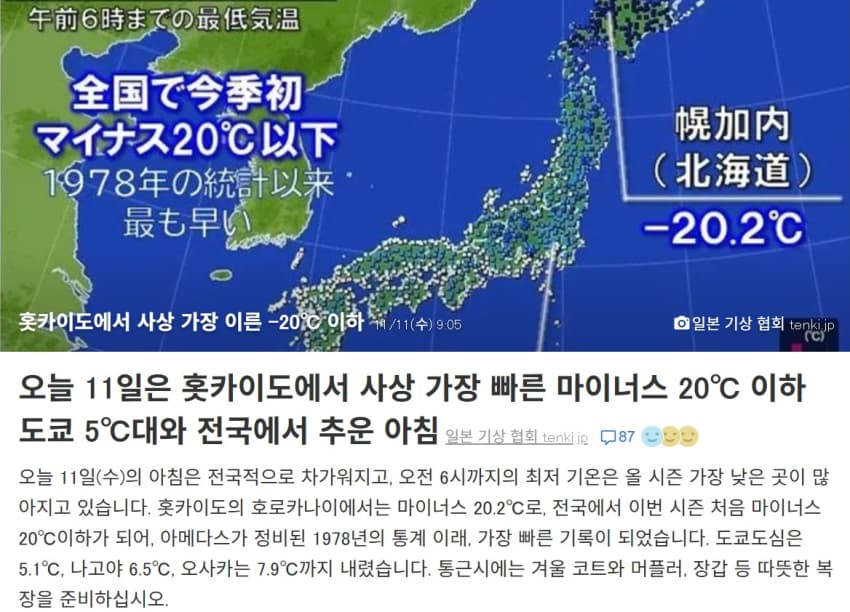
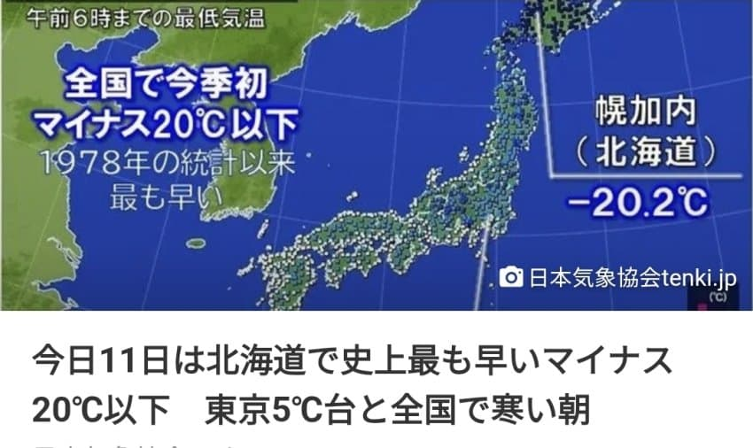

오늘 11일(수) 아침은 전국적으로 추위가 심해 오전 6시까지 관측된 최저기온이 올가을 들어 가장 낮은 곳이 많았습니다. 홋카이도 호로카나이에서는 영하 20.2℃를 기록하며 전국에서 올 시즌 처음으로 영하 20℃ 이하로 떨어졌습니다.
이는 아메다스(자동기상관측시스템)가 정비된 1978년 통계 작성 이래 가장 이른 기록입니다. 도쿄 도심은 5.1℃, 나고야는 6.5℃, 오사카는 7.9℃까지 내려갔습니다. 출근길에는 겨울 코트와 목도리, 장갑 등을 챙겨 따뜻하게 입으시기 바랍니다.
오늘 11일(수)은 강한 한기가 유입되는 가운데 맑은 날씨로 복사냉각이 강해지면서 전국적으로 추운 아침을 맞았습니다. 많은 지역에서 올 시즌 최저기온을 기록하고 있습니다.
오전 6시까지 관측된 최저기온은 홋카이도 호로카나이에서 영하 20.2℃로, 전국에서 올 시즌 처음으로 영하 20℃ 이하를 기록했습니다. 이는 아메다스가 정비된 1978년 통계 작성 이래 가장 이른 기록입니다. 최저기온이 0℃ 미만인 ‘겨울날’을 기록한 관측 지점은 전국의 약 30%에 해당하는 262곳으로, 올 시즌 가장 많았습니다.
그 밖에 센다이는 2.1℃, 도쿄 도심은 5.1℃, 요코하마는 6.7℃, 나고야는 6.5℃, 오사카는 7.9℃까지 떨어져 모두 올 시즌 최저기온을 경신했습니다.
출근길에는 겨울 코트와 목도리, 장갑 등을 챙겨 따뜻하게 입으시기 바랍니다.


11일 오늘 기준 영하 20도 돌파
- 홋카이도란 대체
댓글
수집 당시 댓글 71개
고닉치와 · 11.11 10:41:56
· 쌀먹대장 · 11.11 10:51:03
· 고닉치와 · 11.11 10:52:29
· 쌀먹대장 · 11.11 10:53:48
· 고닉치와 · 11.11 11:00:29
· gwoo · 11.11 11:25:57
· 고닉치와 · 11.11 11:26:48
· 애호가갤 · 11.11 12:25:10
· 고닉치와 · 11.11 12:55:45
· [ずんだもん] · 11.12 11:15:45
· 고닉치와 · 11.12 11:30:42
· ㅇㅇ · 11.12 15:38:32
쌀먹대장 · 11.11 10:50:12
· 쌀먹대장 · 11.11 10:50:20
· gwoo · 11.11 11:26:06
킷사마 · 11.11 11:02:10
· gwoo · 11.11 11:26:18
meta · 11.11 11:17:28
· gwoo · 11.11 11:26:28
땨뗘(봇) · 11.12 09:10:06
인천왕자 · 11.12 09:10:46
· 인천왕자 · 11.12 09:10:54
ㅇㅇ · 11.12 09:11:28
· ㅇㅇ · 11.12 15:04:13
ㅇㅇ · 11.12 09:11:39
ㅇㅇ · 11.12 09:12:06
ㅇㅇ · 11.12 09:12:16
ㅇㅇ · 11.12 09:12:22
아잉마르 · 11.12 09:16:28
ㅇㅇ · 11.12 09:18:13
· ㅇㅇ · 11.12 09:39:57
· ㅇㅇ · 11.12 12:06:15
ㅇㅇ · 11.12 09:18:30
· ㅇㅇ · 11.12 09:20:45
ㅇㅇ · 11.12 09:19:30
ㅇㅇ · 11.12 09:21:27
ㅇㅇ · 11.12 09:21:47
이상혜지꽃 · 11.12 09:27:22
좃구녕 · 11.12 09:27:48
· ㅇㅇ · 11.12 09:56:35
ㅇㅇ · 11.12 09:27:56
ㅇㅇ · 11.12 09:37:59
· ㅇㅇ · 11.12 12:06:21
ㅇㅇ · 11.12 09:39:16
· ㅇㅇ · 11.12 09:57:19
· ㅇㅇ · 11.12 12:06:26
ㅇㅇ · 11.12 09:41:17
· ㅂㅂ · 11.12 10:34:10
ㅇㅇ · 11.12 09:43:51
· ㅇㅇ · 11.12 09:57:52
ㅇㅇ · 11.12 09:55:01
· ㅇㅇ · 11.12 09:55:44
ㅇㅇ · 11.12 09:57:22
· ㅇㅇ · 11.12 09:58:32
ㅇㅇ · 11.12 09:58:42
ㅇㅇ · 11.12 10:03:22
ㅇㅇ · 11.12 10:05:27
ㅇㅇ · 11.12 10:12:30
ㅇㅇ · 11.12 10:24:58
ㅇㅇ · 11.12 10:31:24
훗카 이도
· ㅇㅇ · 11.12 10:31:43
훗
술담배여자도박 · 11.12 10:31:51
ㅇㅇ · 11.12 10:53:42
니엔테 · 11.12 12:16:43
DC전사쿠루미쨩 · 11.12 12:24:37
파치카 · 11.12 12:25:07
ㅇㅇ · 11.12 14:38:37
Rainybleu · 11.12 15:44:14
ㅇㅇ · 11.12 16:37:28
ㅇㅇ · 11.12 16:55:35
ㅇㅇ · 11.12 17:23:58